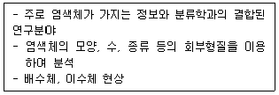
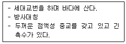
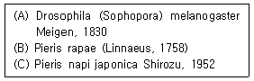
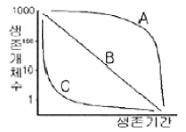
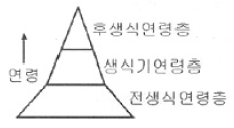
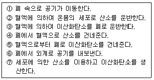

생물분류기사(식물) (2006-05-14 기출문제)
1과목: 계통분류학
1. 다음 동물 중 3배엽성 무체강(acoelomates) 동물은?
- 자포동물
- 편형동물
- 선형동물
- 윤형동물
(정답률: 54%)

2. 다음이 설명하는 분류학적 연구방법은?

- 생화학적 연구방법
- 세포학적 연구방법
- 면역학적 연구방법
- 분지론적 연구방법
(정답률: 91%)
3. 다음이 설명하는 강(Class)은 무엇인가?

- 산호충강
- 해파리강
- 히드로충강
- 복족강
(정답률: 92%)
4. 식물이 감수분열 또는 체세포분열시 분열기작의 이상으로 염색체(chromosome)의 수가 2n±1로 되는 것은?
- 이수체
- 자가배수체
- 타가배수체
- 배수체복합체
(정답률: 88%)
5. 다음 중 유형동물과 관계 없는 것은?
- 불완전한 소화계
- 문강과 구문
- 배설계로 원신관을 소유
- 혈관 보유
(정답률: 50%)
6. 다음 중 생물학적 종의 개념과 가장 거리가 먼 것은?
- 한 종은 다른 종과 생식적으로 격리되어 있다.
- 한 종의 구성원은 하나의 생태적 다위(ecological unit)를 이룬다.
- 한 종은 서로 통하는 하나의 커다란 유전자 풀(gene pool)을 구성한다.
- 시간의 경과에 따른 조상-후손관계를 잘 반영해 주고 있는 개념이다.
(정답률: 62%)
7. 동물 명명법에 대한 설명이 아닌 것은?
- 분류군에 일정한 형식을 기준으로 학명을 부여하는 것을 명명이라 한다.
- 근대적인 동물군에 대한 학명은 린네가 동물계(1758)에서 이명식 명명법을 제안한 것에서 비롯된다.
- 동물명명규약은 식물계나 미생물계 등 다른 생물계의 명명규약과 함께 사용한다.
- 이명법은 생물의 종명을 속명과 종소명으로 구성한다.
(정답률: 74%)
8. 다음에 표기된 종의 학명에 대한 설명 중 옳은 것은?

- (A)의 (Sophopora)는 Drosophila의 이전 속명이다.
- (A)의 1830은 학회에서 논문을 발표한 해이다.
- (B)의 (Linnaeus, 1758)은 종소명이 바뀐 것을 나타낸다.
- (C)의 japonica는 아종소명이다.
(정답률: 32%)
9. 다음 중 배우자체 세대가 포자체 세대보다 더 우세한 식물군은?
- 피자식물
- 나자식물
- 양치식물
- 선태식물
(정답률: 47%)
10. 자포동물의 자포가 발사되는 힘은 어떻게 얻어지는가?
- 근육운동
- 편모운동
- 아메바운동
- 팽압운동
(정답률: 75%)
11. 극피동물의 조상은 좌우상칭이었으나 2차적으로 방사상칭의 체계를 갖게 되었다는 근거는?
- 수관계의 구조
- 보대와 간보대의 배열
- 유생의 형태
- 차극의 형태
(정답률: 57%)
12. 분류학자들의 과제 중 종형성(speciation)과 진화 요인(evolutionary factor)을 탐구하여 생물의 다양성을 인과적으로 설명하는 단계는?
- 알파 분류학
- 베타 분류학
- 감마 분류학
- 델타 분류학
(정답률: 42%)
13. 분류의 단계(카테고리)가 큰 것으로부터 작은 것으로 올바르게 나열된 것은?
- 계 - 강 - 종 - 속
- 과 - 목 - 속 - 종
- 강 - 목 - 과 - 속
- 문 - 목 - 강 - 과
(정답률: 93%)
14. 형태적으로 차이가 없거나 아주 비슷한 분류군 사이에서 생식적으로 격리된 종을 무엇이라고 하는가?
- 동소종(sympatric species)
- 이소종(allopatric species)
- 생태종(ecospecies)
- 동포종(sibling species)
(정답률: 88%)
15. 나자식물과 피자식물을 구분하는 가장 중요한 형질상태는?
- 배주(밑씨)의 나출 여부
- 유관속 조직의 존재 여부
- 종자형성 여부
- 이형포자 생성 여부
(정답률: 100%)
16. 모식표본(type specimens)이란 다음 중 어느 것인가?
- 연구자간에 교환목적으로 제작된 표본
- 박물관에 보존을 위해 제작된 표본
- 연구논문의 증거 자료로 번호가 부여된 표본
- 학명을 적용할 때 인증의 기준이 되는 표본
(정답률: 79%)
17. 다음 식물 중 식충식물이 아닌 것은?
- 끈끈이 귀개
- 통발
- 끈끈이 주걱
- 끈끈이 장구채
(정답률: 67%)
18. 생물을 분류하는데 있어 가장 기본이 되는 단위는?
- 지역 개체군(local population)
- 변종(variety)
- 종(species)
- 속(genus)
(정답률: 100%)
19. 동물의 한 분류군인 lchneumoninae의 분류계급은?
- 속(Genus)
- 아속(Subgenus)
- 아과(Subfamily)
- 목(Order)
(정답률: 50%)
20. 동물의 경우 과의 명칭은 모식속 명칭의 어간에 접미사를 이용한다. 명명법상 과군의 접미사에 알맞은 것은?
- -inae
- -oidea
- -idae
- -ini
(정답률: 69%)
2과목: 환경생태학
21. 들쥐 60마리를 표식 방류한 뒤 재포획된 80마리 중 4마리에 표식이 있었다면 개체군수는 몇 마리인가?
- 1,200
- 4,800
- 320
- 240
(정답률: 75%)
22. 단위 면적당 생물의 전체무게를 무엇이라 하는가?
- 총 1차 생산력(gross primary productivity)
- 순 1차 생산력(net primary productivity)
- 생물량(biomass)
- 1차 영양단계(primary trophic level)
(정답률: 95%)
23. 한정된 자원에 대한 둘 또는 그 이상의 생물들 사이의 경쟁에서 한쪽이 이익을 차지하면 다른 한쪽은 경쟁에서 짐으로써 피해를 입게 되는 경쟁형태를 무엇이라 하는가?
- 이용경쟁(exploitative competition)
- 간섭경쟁(interference competition)
- 일반경쟁(nonspecific competition)
- 협동경쟁(cooperative competition)
(정답률: 47%)
24. 생태학에서 다음 중 모든 소비자(consumer)에 맞는 내용은?
- 모든 소비자는 생산자(producer)이다.
- 모든 소비자는 독립영양생물(autotroph)이다.
- 모든 소비자는 종속영양생물(heterotroph)이다.
- 모든 소비자는 분해자(decomposer)이다.
(정답률: 88%)
25. 생물군집에 끼치는 오염의 영향은 근본적으로 육상과 수상 환경이 서로 다르다. 담수 생태계 오염의 일반적인 특징을 나타낸 것은?
- 갑작스럽게 일어난다.
- 점진적인 과정이다.
- 가스 축적이나 중금속의 축적이 심하게 일어난다.
- 군집의 조성이 크게 변하지 않는다.
(정답률: 72%)
26. 지위(niche)는 두 가지 방법으로 생각할 수 있다. 기본지위(fundamental niche)는 실현지위(realized niche)와 어떻게 다른가?
- 기본지위는 실현지위의 한 부분이다.
- 기본지위는 실현지위 보다 크다.
- 기본지위와 실현지위는 차이가 없다.
- 기본지위는 경쟁을 포함한다.
(정답률: 88%)
27. 태양에너지는 광합성을 통해 생산자에 의해 사용된다. 그리고 나서 먹이속의 화학결합에너지 형태로 하나의 소비자에서 다음 소비자로, 그리고 하나의 영양단계에서 또 다른 영양단계로 넘어간다. 최종적으로 에너지는 분해자로 넘어간다. 각 영양단계의 전환 효율은 약 몇 % 정도인가?
- 3%
- 10%
- 30%
- 80%
(정답률: 92%)
28. 다음은 생태적 천이(succession)에 관한 용어이다. 옳게 설명된 것은?
- 1차천이는 파괴된 곳(농토, 벌목지 등)에서 군집이 발달하는 것이다.
- 2차천이는 1차천이보다 느린 속도로 일어난다.
- 군집의 천이는 총생산량이 호흡량보다 많아지는 방향으로 진행한다.
- 타생천이는 불이나 홍수 같은 물리적 힘에 의해 주기적으로 영향을 받은 군집에서 발생할 수 있다.
(정답률: 64%)
29. 다음 생존곡선(survivorship curve) 그래프는 생존기간과 생존개체수를 대비한 것이다. 설명이 옳지 않은 것은?

- 특정 종이나 집단에서 나이에 따른 사망률의 특성을 나타내는 것이다.
- A형 생존곡선으로는 선진국의 인간사회, 동물원의 사육동물과 같은 경우에서 볼 수 있다.
- B형 생존곡선은 유생시기에 생존하기 어려운 환경에 놓인 굴에서 볼 수 있다.
- C형 생존곡선은 성체로 생존할 확률이 낮은 해양어류에서 볼 수 있다.
(정답률: 88%)
30. 부영양화에 대한 설명 중 옳은 것은?
- 부영양화된 호소는 깊이가 낮으며, 낮은 종 다양성으로 인하여 낮은 생산력을 보여 빈영양성의 물 환경이 조성된다.
- 식물성 플랑크톤의 증가는 조류의 대발생(algal bloom)을 가져오며, 부영양화된 수체에서는 관속식물이 성장하지 못한다.
- 부영양화가 시작되면 심수층에서 산소고갈이 나타나 잉어과의 종들이 다른 종으로 교체된다.
- 호소의 퇴적비율이 증가되며 호소의 수명이 단축되지만, 우점종이 출현한다.
(정답률: 19%)
31. 각각의 군집을 섬으로 생각하는 도서생물지리분포이론을 이용하여 생물군집의 형성에 대한 이해를 쉽게하고 있다. 이와 같은 군집형성에 대한 설명 중 옳지 않은 것은?
- 섬의 크기가 크면 생물학적 니체의 수가 많으므로 이동해 오는 종들의 소멸률이 낮다.
- 종들의 이동원으로부터 거리가 가까우면 종들의 이입률이 높아지고 반대로 거리가 멀면 낮아진다.
- 이동원으로부터 거리가 가까운 군집이 먼 군집보다 많은 수의 종으로 이루어진다.
- 종들의 이입률이 높아지면 종 다양성을 이루어 종의 소멸률이 상대적으로 낮아진다.
(정답률: 64%)
32. 지구에서 생물이 존재하는 부분을 무엇이라 하는가?
- 생물군계(biome)
- 생물권(biosphere)
- 환경(environment)
- 군집(community)
(정답률: 100%)
33. 나지의 암석에서 진행되는 1차 천이과정에서 가장 먼저 정착하여 군집을 형성할 것이라고 예상되는 식물은?
- 관목
- 교목
- 지의류
- 초본식물
(정답률: 80%)
34. 지구 온난화 현상의 영향으로 볼 수 없는 것은?
- 동 · 식물의 분포에 영향을 줄 것이다.
- 이산화탄소 및 메탄의 배출량이 감소하여 지구 온난화를 가속시킬 것이다.
- 해수면이 상승할 것이다.
- 여름철 질병발생률을 높일 것이다.
(정답률: 96%)
35. 번식능력은 특정 연령층(생식기연령층)만이 지니고 있을 때, 그림과 같은 연령층 분포를 갖는 개체군으로부터 예측할 수 있는 것은?

- 각 연령층이 일정 비율로 되어 있으므로 안정된 상태를 유지할 것이다.
- 노쇠하거나 쇠퇴중인 개체군이다.
- 생식기 및 후생식 연령층이 감소할 것이다.
- 어린 개체가 많으므로 개체군이 커질 수 있다.
(정답률: 87%)
36. 환경오염원과 지표식물이 잘못 짝지어진 것은?
- 아황산가스-알파파
- 불화물-글라디올러스
- 에틸렌-토마토의 꽃
- 이산화탄소-이끼류
(정답률: 70%)
37. 다음 중 생태학적 체제가 상위단계에서 하위단계까지 바른 순서로 연결된 것은?
- 생물권-생물군계-생태계-군집-개체군-개체
- 생물권-생태계-생물군계-군집-개체군-개체
- 생태계-생물군계-생물권-군집-개체군-개체
- 생태계-생물권-생물군계-군집-개체군-개체
(정답률: 60%)
38. 질소의 순환에 관한 설명 중 옳지 않은 것은
- 대기 중 질소가스를 고정하는 방법은 번개에 의한 질소산화물 형성, 미생물에 의한 질소고정, 산업적질소고정 등이다.
- 식물은 토양으로부터 주로 아질산이온을 흡수하여 단백질을 합성한다.
- 탈질세균은 질산성 질소를 탈질과정을 통해 질소 분자로 환원한다.
- 유기질소 화합물은 부패에 관여한 미생물에 의해 암모니아로 분해된다.
(정답률: 88%)
39. K-선택 종들의 개체군 생장 곡선은?
- L 모양
- 직선
- S 모양
- J 모양
(정답률: 65%)
40. J자형 생장곡선을 나타낼 수 있는 생물이라도 자연상태에서는 개체군이 일정한 크기와 밀도를 넘어 무한정 증가할 수 없다. 이러한 경우에 부합하지 않는 설명은?
- 개체당 성장률이 중간 밀도에서 가장 높게 나타난다.
- 개체수가 급락하였다가 다시 빠르게 증가하는 주기적 반복양상을 나타낼 수 있다.
- 종간 및 종내 경쟁, 포식, 자원의 제한 등에 의해 개체군의 번식능력을 최대한 발휘할 수 없다.
- 환경저항을 받게 되면 개체군의 생장이 정지하거나 개체군의 크기가 급락한다.
(정답률: 40%)
3과목: 형태학
41. 다음은 척삭동물문의 특징에 대해 기술한 것이다. 이 중 공통된 특징으로 볼 수 없는 것은?
- 척삭동물은 일반적으로 미삭동물, 두삭동물, 척추동물로 나뉜다.
- 발달된 인두새열이 있다.
- 항문 뒤쪽에는 꼬리가 있다.
- 등쪽의 속이 비어있는 신경삭을 가지고 있다.
(정답률: 77%)
42. 표피가 수행하는 가장 중요한 기능인 것은?
- 수분조절
- 물질수송
- 식물체지지
- 이산화탄소 고정
(정답률: 83%)
43. 목재의 나이테란 무엇인가?
- 관다발형성층의 불균등한 활동에 의한 것이다.
- 체관의 차별적 성장에 의한 것이다.
- 관다발을 보호하는 섬유조직이다.
- 목재에 있는 방사조직이다.
(정답률: 37%)
44. 기공장치에 대한 설명으로 옳은 것은?
- 기공은 잎의 상면에 주로 분포한다.
- 기공의 주요기능은 빛에너지 흡수이다.
- 기공은 잎의 하면에, 공변세포는 잎의 상면에 따로따로 존재한다.
- 부세포의 배열과 모양이 분류형질로 이용된다.
(정답률: 63%)
45. 종자의 배꼽(제, hilum)이 하는 역할은?
- 발아시 기체교환이 수월하게 일어나는 곳
- 발아시 물이 쉽게 침투하는 곳
- 발아시 뿌리(유근)가 나오는 곳
- 발아시 떡잎이 나오는 곳
(정답률: 62%)
46. 다음 기관 중 줄기의 변형이 아닌 것은?
- 백합의 다육성 인경
- 감자
- 고구마
- 딸기의 기는 줄기
(정답률: 82%)
47. 1기 생장하는 뿌리에서 관다발 등 조직분화가 이루어지고 근모가 발생하는 부분은?
- 성숙(분화)대
- 신장대
- 분열대
- 근관
(정답률: 58%)
48. 아래의 표는 포유동물의 호흡에 대한 설명이다. 호흡의 순서를 옳게 나열한 것은?

- ①, ④, ②, ③, ⑦, ⑥, ⑤
- ①, ④, ③, ⑦, ②, ⑤, ⑥
- ①, ③, ④, ②, ⑤, ⑦, ⑥
- ①, ④, ②, ⑦, ③, ⑤, ⑥
(정답률: 93%)
49. 신경계는 어느 배엽에서 발생하는가?
- 외배엽
- 중배엽
- 내배엽
- 하배엽
(정답률: 77%)
50. 파충류에 관한 설명으로 가장 거리가 먼 내용은?
- 보통 2쌍의 다리를 가지며 발은 5개의 발가락을 가진다.
- 뱀류에는 다리가 없다.
- 보통 2쌍의 다리를 가지며 발은 4개의 발가락을 가진다.
- 파충류의 몸은 각질의 표피로 덮여 있다.
(정답률: 75%)
51. 지렁이 소화계에서 입에서 항문에 이르는 구조들의 정확한 순서는?
- 인두 → 장 → 소낭 → 모래주머니
- 인두 → 식도 → 소낭 → 모래주머니 → 장
- 식도 → 모래주머니 → 장 → 소낭
- 식도 → 소낭 → 인두 → 모래주머니 → 장
(정답률: 75%)
52. 뿌리끝의 근관(rootcap)의 역할에 해당하는 것은?
- 뿌리표피세포 형성
- 점액분비
- 뿌리털형성
- 뿌리 관다발형성
(정답률: 91%)
53. 선형동물인 회충에 관한 설명 중 옳은 것은?
- 수컷은 암컷보다 크다.
- 수컷은 암컷보다 작다.
- 암컷은 몸의 뒤쪽이 갈고리처럼 되어 있다.
- 암컷은 교미 시에 사용되는 강모를 지니고 있다.
(정답률: 59%)
54. 일반 외부형태는 종을 분류하는데 가장 편리하게 이용되는 분류학적 형질이다. 곤충이나 거미 등 근연종의 구분이 어려울 경우 특수구조로서 가장 보편적으로 이용되는 형태적 형질은?
- 머리의 모양
- 체색
- 안테나(촉각)의 모양
- 생식기(또는 교접기; genitalia)
(정답률: 75%)
55. 불가사리는 무엇으로 이동하는가?
- 허족
- 관족
- 다섯 개의 팔
- 가시
(정답률: 86%)
56. 동물의 먹이에 대한 식성을 나타낸 설명 중 틀린 것은?
- 다른 동물이나 곤충을 잡아먹고 사는 종들을 육식성종 또는 포식성종이라고 한다.
- 여러 종류의 먹이를 먹는 종을 다식성(polyphagous)종이라 한다.
- 단식성(Monophagous)종은 단일종, 또는 계통이 가까운 몇몇 종만 먹는 종들이다.
- 식식성(Phytophagous) 종이란 식물을 주로 먹으며, 때로는 동물성도 먹는 종이다.
(정답률: 93%)
57. 식물의 자성배우체인 배낭은 8개의 핵으로 이루어져 있다. 다음 중 배낭의 핵(세포)이 아닌 것은?
- 극핵
- 조세포
- 반족세포
- 포원세포
(정답률: 72%)
58. 다음 중 화분립을 생성하는 것은?
- 소포자이다.
- 대포자이다.
- 포자낭수이다.
- 포자체이다.
(정답률: 92%)
59. 다음 중 1기 생장에 대한 설명으로 옳은 것은?
- 관다발형성층의 활동에 의해 형성된다.
- 코르크형성층의 활동에 의해 형성된다.
- 정단분열조직의 활동에 의해 형성된다.
- 식물의 비대생장이다.
(정답률: 85%)
60. 다음 중 부레가 없거나 퇴화된 어류에 해당되는 것은?
- 가물치
- 미꾸리
- 상어
- 잉어
(정답률: 82%)
4과목: 보존 및 자원생물학
61. 다음 중 국가 생물자원의 관리와 연구 등을 위해 2007년에 개관 예정인 환경부 산하의 기관 명칭은?
- 국립생물환경과학센터
- 국립생물다양성보전관
- 국립생물자원관
- 국립생물자원정보센터
(정답률: 79%)
62. 식물 종 보존을 위한 식물원의 기능이 아닌 것은?
- 일반적으로 널리 알려져 있는 종의 재배에 많은 비중을 둔다.
- 건조표본을 통해 식물의 분포나 서식지 요구도에 대한 정보를 제공한다.
- 일반대중에게 보전의 중요성을 교육시키는 역할을 수행한다.
- 탐사대 등을 파견하여 새로운 종을 발견하고 기초적인 연구를 수행한다.
(정답률: 100%)
63. 식물 종의 개체군 사이에 유전적인 분화는 유전적으로 독특한 개체군을 형성할 수 있는데, 그것의 원인과 가장 관계 먼 내용은?
- 지리학적인 분화
- 수익성 식물의 육종
- 서식지 분화
- 화분의 전이
(정답률: 93%)
64. 다음 중 상리공생(mutualism) 관계가 아닌 것은?
- 과일나무 - 새
- 꽃 - 곤충
- 조류(algae) - 동물플랑크톤
- 진딧물 - 개미
(정답률: 87%)
65. 자연자원의 보전을 위한 조건으로 가장 거리가 먼 것은?
- 가능하면 보전지역을 많은 수로 유지하고, 보전지 규모를 크게 한다.
- 훼손에 의한 파국적 손실에 대비하여 중복을 적게 한다.
- 자연자원의 제한된 이용을 위하여 주변 완충지를 크게 늘린다.
- 관리를 통한 보전과 생태학적 원리를 이용한 연구와 감시가 필요하다.
(정답률: 85%)
66. 종이 생존하는데 필요한 최소의 크기의 개체군에 대해서 설명한 것 중 틀린 것은?
- 최소 존속개체군이라 한다.
- 종을 보전하기 위해서는 개체군을 최소로 유지한다.
- 서식지 크기와 밀접한 관계가 있다.
- 보전생물학적인 관점에서 중요한 개념이다.
(정답률: 88%)
67. 멸종율이 크게 증가한 근원적인 이유로서 가장 올바른 것은?
- 지진에 의한 산불
- 병
- 화산폭발
- 지구를 지배하는 인간의 증가
(정답률: 100%)
68. 보전생물학에 대한 설명으로 가장 거리가 먼 내용은?
- 종, 군집, 생태계에 대한 인간 활동을 명확히 이해하는 것이다.
- 생물다양성 붕괴의 위협에 대응하여 발전한 종합적인 과학이다.
- 절멸의 위험에 처해 있는 종들을 생태계에서 기능을 발휘할 수 있도록 재건하는 것이다.
- 경제적인 요인과 단기간에 걸친 생물보호가 기본 관심사이다.
(정답률: 100%)
69. 개체군의 크기가 작아지면서 생기는 현상으로 볼 수 없는 것은?
- 유전적 다양성과 변이성의 소실
- 유전적 부동
- 근친 교배의 증가
- 진화적 유연성의 증가
(정답률: 86%)
70. 다음 중 멸종되기 쉬운 종이 아닌 것은?
- 지리적 분포 범위가 좁은 종
- 유전적 변이가 높은 종
- 행동권이 넓어야 생육이 가능한 종
- 특이한 생태적 지위를 요구하는 종
(정답률: 89%)
71. 생물 군집과 생태계를 복원하는 방법 중 복원 비용이 너무 많이 들었거나 예전의 복원 시도 노력이 실패하여 훼손된 지역을 그대로 두는 방법을 무엇이라 하는가?
- 방치
- 복원
- 회복
- 대체
(정답률: 100%)
72. 광산지역에 법적 보호종인 솔나리군락이 존재하는데 개발로 인해 불가피하게 훼손될 경우 이 종을 보전하기 위한 가장 적합한 방안은?
- 개체를 주변의 벌목한 산지에 이식할 계획을 세운다.
- 신갈나무의 식생구조가 잘 발달된 지역에 이식한다.
- 서식환경에 대한 연구를 실시하여 가장 적절한 서식지에 이식한다.
- 광산지역의 영향권에서 충분이 이격하여 이식한다.
(정답률: 100%)
73. 호랑이와 같이 야생에 극소수만 살아 있어서 피식자 개체군에 미치는 영향이 크지 않은 상태에 이른 절멸을 무엇이라 하는가?
- 전지구상의 절멸
- 야생에서의 절멸
- 국지적 절멸
- 생태적 절멸
(정답률: 82%)
74. 철새 서식지와 생태, 경제, 문화, 오락적인 가치를 지닌 습지를 보호하자는 국제적 협약으로, 현재 우리나라는 창녕 우포늪과 울산의 무제치늪이 보호지구로 설정되어 있다. 이 국제적 협약은?
- 리우협약
- 생물다양성협약
- 람사협약
- 아젠다 21
(정답률: 89%)
75. 개체군의 절멸의 원인으로 가장 관계가 먼 것은?
- 서식지 파괴
- 환경의 질 저하
- 과다 수확
- 개량종의 도입
(정답률: 77%)
76. 희귀종 또는 위험종인 야생종의 표본 추출 전략 중 종자를 수집하기 위한 수집 우선순위에 포함되지 않는 것은?
- 개체군과 개체수가 빠르게 감소하고 있는 종
- 진화적 및 분류학적으로 유일한 종
- 분포지역이 넓은 종
- 자연으로 재도입될 수 있는 종
(정답률: 77%)
77. 보전 생물학의 원리는 상식과 새로운 보호지구 설계에서 겪은 경험을 함께 고려해야 한다. 새로운 공원의 조성 시 보편적으로 고려해야 할 조건으로 가장 거리가 먼 것은?
- 가능한 충분한 넓이를 가져야 한다.
- 가급적 가장 자리를 많이 만든다.
- 길이나 장애물, 다른 인간 활동에 의해서 단편화 되지 말아야 한다.
- 많은 절멸 위험 종의 존속을 위해 교란이 적어야 한다.
(정답률: 94%)
78. 유전자원의 이용과 보전에 있어 가장 효율적인 방법으로 여겨지는 것은?
- 동물원
- 종자은행
- 식물원
- 수목원
(정답률: 93%)
79. 생물 종 보전을 위한 접근방법으로 가장 거리가 먼 내용은?
- 인공화학물질을 이용한 외래 종의 제거
- 정부의 보전정책
- 지속적인 연구와 전문인력 양성
- NGO의 종 보전에 대한 활동
(정답률: 93%)
80. 종의 절멸을 방지하기 위한 현지 외 방법이 아닌 것은?
- 식물원 또는 수목원 조성
- 동물원
- 종자은행
- 보호구역 지정
(정답률: 82%)
5과목: 자연환경관계법규
81. 농지법상 용도구역에 관한 설명으로 옳지 않은 것은?
- 농업진흥구역은 농업용으로 이용하고 있는 토지가 집단화되어 있는 지역이다.
- 농업보호구역은 농업진흥구역의 용수원확보 등 농업 환경을 보호하기 위해 설정한 지역이다.
- 농업보호구역으로 지정하여 관리할 지역에 서울특별시의 생산녹지지역도 포함되어 있다.
- 농업보호구역에서 농업진흥지역으로의 변경은 대통령령이 정하는 바에 의하여 농림부장관의 승인없이 할 수있다.
(정답률: 36%)
82. 야생동식물보호법상 불법 포획으로 5년이하의 징역 또는 3천만원이하의 벌금에 해당되지 않는 동물은?
- 두루미
- 장수하늘소
- 어름치
- 사향노루
(정답률: 58%)
83. 환경정책기본법상 사전환경성검토 협의시 협의기간을 연장할 수 있는 최대 기간은?
- 7일 이내
- 10일 이내
- 15일 이내
- 30일 이내
(정답률: 15%)
84. 자연공원에 포함되지 않는 것은?
- 도립공원
- 국립공원
- 군립공원
- 시립공원
(정답률: 56%)
85. 다음 중 자연환경보전법에 의한 자연휴식지의 지정 주체는?
- 환경부장관
- 지방환경관서의 장
- 지방자치단체의 장
- 관계행정기관의 장
(정답률: 34%)
86. 환경정책기본법에 포함되지 않는 사항은?
- 방사능 물질에 의한 환경오염의 방지
- 과학기술의 위해성 평가
- 전자파의 위해성 관리
- 환경성 질환에 대한 대책
(정답률: 27%)
87. 자연환경보전법상 생태계보전협력금은 10억원 범위 안에서 생태계의 훼손면적에 단위면적당 부과금액과 지역계수를 곱하여 산정 · 부과 한다. 이때 단위 면적당 부과금액은 얼마인가?
- 제곱미터당 250원
- 제곱미터당 500원
- 제곱미터당 750원
- 제곱미터당 1,000원
(정답률: 31%)
88. 국토의 계획 및 이용에 관한 법률상의 용도지역은 도시지역, 관리지역, 농림지역 및 자연환경보전지역으로 구분한다. 이중 자연환경보전지역의 법령상의 건폐율과 용적률 범위로 옳게 짝지어진 것은?
- 건폐율 : 20퍼센트 이하, 용적률 : 40퍼센트 이하
- 건폐율 : 20퍼센트 이하, 용적률 : 80퍼센트 이하
- 건폐율 : 10퍼센트 이하, 용적률 : 40퍼센트 이하
- 건폐율 : 10퍼센트 이하, 용적률 : 80퍼센트 이하
(정답률: 50%)
89. 도시계획위원회의 심의를 거쳐 1회에 한하여 3년 이내의 기간동안 개발행위 허가를 제한할 수 있는 지역에 속하지 않는 것은?
- 녹지지역으로 수목이 집단적으로 생육되고 있는 지역
- 계획관리지역으로 조류 증이 집단적으로 서식하고 있는 지역
- 도시기본계획을 수립하고 있는 지역으로 용도지역변경이 예상되는 지역
- 개발행위로 인하여 주변의 환경, 경관, 미관 등이 오염되거나 손상될 우려가 있는 지역
(정답률: 67%)
90. 국토기본법에 명시된 “환경친화적 국토관리”를 위하여 국가 및 지방자치단체가 해야 할 일로 가장 거리가 먼 것은?
- 국토에 관한 계획이나 사업을 수립, 집행함에 있어서 자연환경과 생활환경에 미치는 영향을 사전에 고려하여야 하며, 환경에 미치는 부정적인 영향이 최소화될 수 있도록 하여야 한다.
- 국토의 무질서한 개발을 방지하고 국민생활에 필요한 토지를 원활하게 공급하기 위하여 토지이용에 관한 종합적인 계획을 수립하고 이에 따라 국토공간을 체계적으로 관리하여야 한다.
- 산, 하천, 호소, 연안, 해양으로 이어지는 자연생태계를 통합적으로 관리, 보전하고 훼손된 자연생태계를 복원하기 위한 종합적인 시책을 추진함으로써 인간이 자연과 더불어 살 수 있는 쾌적한 국토환경을 조성하여야 한다.
- 국제교류가 활발히 이루어질 수 있는 국토여건을 조성함으로써 대륙과 해양을 잇는 국토의 지리적 특성이 최대한 발휘되도록 하여야 한다.
(정답률: 67%)
91. 국토의 계획 및 이용에 관한 법률상 건폐율의 특례에 관한 설명 중 옳은 것은? (단, 조례는 고려하지 않음)
- 도시지역외 지역에 지정된 개발진흥지구 : 60% 이하
- 농공단지 : 40% 이하
- 수산자원보호구역 : 40% 이하
- 공업지역안에 있는 국가산업단지 : 60% 이하
(정답률: 34%)
92. 야생동 · 식물보호법에서 지정한 멸종위기 야생동 · 식물 II급에 해당되는 종명은?
- 삵
- 붉은박쥐
- 표범
- 산양
(정답률: 63%)
93. 산림청장이 지정, 육성할 수 있는 산지복구전문기관의 업무에 속하지 않는 것은?
- 산림자원 육성을 위한 조사연구
- 형질변경된 산지의 복구
- 형질변경된 산지의 복구설계 · 감리
- 형질변경된 산지의 자연생태계복원 및 자연친화적인 복구방법의 조사 · 연구 및 개발
(정답률: 67%)
94. 국토의 계획 및 이용에 관한 법률에서 규정하고 있는 자연공원법에 의한 공원밀집마을지구에 대한 용적률로서 옳은 것은? (단, 조례는 고려하지 않음)
- 100% 이하
- 150% 이하
- 200% 이하
- 250% 이하
(정답률: 9%)
95. 산림 지역내 채석허가를 규정하고 있는 법규는?
- 산림법
- 산림기본법
- 산지관리법
- 광업법
(정답률: 8%)
96. 국토기본법상 국토계획에 관한 설명 중 옳지 않은 것은?
- 국토종합계획 : 국토전역을 대상으로 하여 국토의 장기적인 발전방향을 제시하는 종합계획
- 도종합계획 : 도의 관할구역을 대상으로 하여 당해 지역의 장기적인 발전방향을 제시하는 종합계획
- 부문별계획 : 국토전역을 대상으로 하여 특정부문에 대한 장기적인 발전방향을 제시하는 계획
- 지역계획 : 국토전역을 대상으로 하여 특정부문에 대한 장기적인 발전방향을 제시하는 계회
(정답률: 65%)
97. 자연공원법상 국립공원위원회의 위원장은 누구인가?
- 환경부장관
- 환경부차관
- 환경부 자연보전국장
- 국립공원관리공단이사장
(정답률: 64%)
98. 국토의 계획 및 이용에 관한 법률에 의한 국토의 용도구분에 해당 되지 않는 지역은?
- 도시지역
- 준도시지역
- 관리지역
- 자연환경보전지역
(정답률: 47%)
99. 독도 등 도서지역의 생태계보전에 관한 특별법에 의한 특정도서보전기본계획의 수립 주기는?
- 1년
- 3년
- 5년
- 10년
(정답률: 39%)
100. 습지보전법상 습지보전기본계획에 포함되어야 할 사항이 아닌 것은?
- 습지보호지역 지정에 관한 계획
- 습지조사에 관한 사항
- 습지보전을 위한 국제협력에 관한 사항
- 습지의 분포 및 면적과 생물다양성의 현황에 관한 사항
(정답률: 57%)